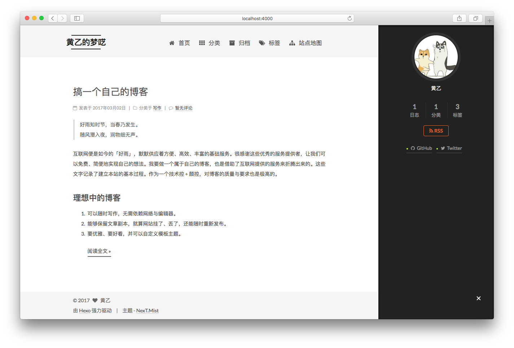

好雨知时节，当春乃发生。
随风潜入夜，润物细无声。
互联网便是如今的「好雨」，默默供应着方便、高效、丰富的基础服务。很感谢这些优秀的服务提供者，让我们可以免费、简便地实现自己的想法。我要做一个属于自己的博客，也是借助了互联网提供的服务来折腾出来的。这些文字记录了建立本站的基本过程。作为一个技术控 + 颜控，对博客的质量与要求也是极高的。
理想中的博客
主角出场：Hexo
超快速度：让上百个页面在几秒内瞬间完成渲染。
支持 Markdown：支持 GitHub Flavored Markdown 的所有功能。
一键部署：只需一条指令即可部署到 GitHub Pages, Heroku 或其他网站。
丰富的插件：拥有强大的插件系统，丰富的漂亮主题。
以上是官网的介绍。客观的数据来说话：这家伙在 Github 上有 14982 Star，2296 Fork。这已令我无法自拔。
安装 Hexo 和 NexT 主题
动手吧，打开 iTerm (使用任意自己喜欢的终端都一样)。依次输入下面命令：
安装喜欢的网站主题（皮肤）。
目前为止，经过以上的几个简单命令。已经完成的工作有：
- 安装了 Hexo 静态站点生成框架。
- 建立了本机的博客网站。
- 安装了 NexT 主题。
网站的常规配置
后面继续配置网站，让她成为我们希望的结构和样子。
使用自己喜爱的编辑器打开文件：_config.yml
| 配置项 | 值 | 说明 |
|---|---|---|
| title | 黄乙的梦呓 | 网站标题 |
| author | 黄乙 | 您的名字 |
| language | zh-Hans | 网站使用的语言 |
| url | http://huangxilong.github.io | 网址 |
| permalink | :title.html | 文章的 永久链接 格式 |
| default_category | 我的分类 | 默认分类 |
| date_format | YYYY年MM月DD日 | 日期格式 |
| theme | next | 网站主题 |
配置网站的样式：themes/next/_config.yml
| 配置项 | 值 | 说明 |
|---|---|---|
| scheme | Mist | 网站外观 |
| sidebar | always | 侧栏显示的时机 |
调试预览、部署网站
启动 Hexo 本地站点，并开启调试模式
用浏览器打开网址：http://localhost:4000 ，显示如下图

把博客部署到 Github 上
修改配置文件，这个要使用你自己的信息来配置。
再输入以下命令，完成网站部署。
经历以上的步骤，我便拥有了一个很优雅、易定制、方便写作和发布的免费博客网站。以后我会继续分享一些后续的配置优化，以及增加一些常用插件。
感想
不得不说，我们正处于一个资源十分丰富、信息十分发达的时期。我从一个完全没有接触过 Hexo 博客、不了解 Markdown 使用方法的小白用户，到开始能谨慎使用这些优秀的服务与工具，来实现自己的一些有趣想法，也不过花了几天的闲余时间。「Stay hungry, Stay foolish」自勉。